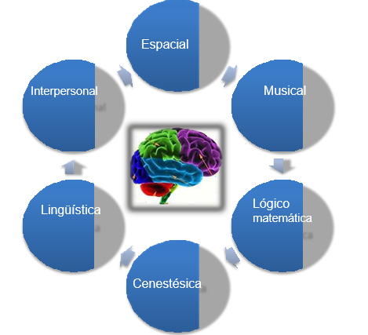
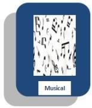

Conocer los tipos de inteligencia que el ser humano posee y conocer las inteligencias múltiples que tienes y que puedes explotar para mejorar tu rendimiento escolar y prepararte mejor para tu futuro.

Al tener esta perspectiva más amplia, el concepto de inteligencia se convirtió en un concepto que funciona de diferentes maneras en las vidas de las personas. Gardner proveyó un medio para determinar la amplia variedad de habilidades que poseen los seres humanos, agrupándolas en siete categorías o "inteligencias"
1. Inteligencia lingüística:Es la capacidad para usar palabras de manera efectiva, sea en forma oral o de manera escrita. Esta inteligencia incluye la habilidad para manipular la sintaxis o significados del lenguaje o usos prácticos del lenguaje. Algunos usos incluyen la retórica (usar el lenguaje para convencer a otros de tomar un determinado curso de acción), la mnemónica (usar el lenguaje para recordar información), la explicación (usar el lenguaje para informar) y el metalenguaje (usar el lenguaje para hablar del lenguaje).
Inteligencia lógico matemática:Es la capacidad para usar los números de manera efectiva y razonar adecuadamente. Esta inteligencia incluye la sensibilidad a los esquemas y relaciones lógicas, las afirmaciones y las proposiciones (si-entonces, causa-efecto), las funciones y las abstracciones. Los tipos de procesos que se usan al servicio de esta inteligencia incluyen: la categorización, la clasificación, la inferencia, la generalización, el cálculo y la demostración de la hipótesis.
Inteligencia corporal-kinética:Es la capacidad para usar todo el cuerpo para expresar ideas y sentimientos (por ejemplo un actor, un mimo, un atleta, un bailarín) y la facilidad en el uso de las propias manos para producir o transformar cosas (por ejemplo un artesano, escultor, mecánico, cirujano).
Esta inteligencia incluye habilidades físicas como la coordinación,
el equilibrio, la destreza, la fuerza, la flexibilidad y la velocidad asó como las capacidades auto perceptivas, las táctiles y la percepción de medidas y volúmenes.
Inteligencia espacial:Es la habilidad para percibir de manera exacta el mundo visual- espacial (por ejemplo un cazador, explorador, guía) y de ejecutar transformaciones sobre esas percepciones (por ejemplo un decorador de interiores, arquitecto, artista, inventor).
Esta inteligencia incluye la sensibilidad al color, la línea, la forma, el espacio y las relaciones que existen entre estos elementos. Incluye la capacidad de visualizar, de representar de manera gráfica ideas visuales o espaciales.

La inteligencia musical:Es la capacidad de percibir (por ejemplo un aficionado a la música), discriminar (por
ejemplo, como un crítico musical), transformar (por ejemplo un compositor) y expresar (por ejemplo una persona que toca un instrumento) las formas musicales.
Esta inteligencia incluye la sensibilidad al ritmo, el tono, la melodía, el timbre o el color tonal de una pieza musical.
Inteligencia interpersonal:Es la capacidad de percibir y establecer distinciones en los estados de ánimo, las intenciones, las motivaciones, y los sentimientos de otras personas. Esto puede incluir la sensibilidad a las expresiones faciales, la voz y los gestos, la capacidad para discriminar entre diferentes clases de señales interpersonales y la habilidad para responder de manera efectiva a estas señales en la práctica (por ejemplo influenciar a un grupo de personas a seguir una cierta línea de acción).
TEST DE INTELIGENCIA
A continuación se presenta un Test sugerente para evaluar las Inteligencias Múltiples (Basado en Flores, 1999).
INSTRUCCIONES:
Lee detenidamente cada afirmación.
Marca un inciso, considerando que 1 es una puntuación baja y significa ausencia; el 5 es la puntuación más alta y significa una presencia notable de lo que se está afirmando.
Suma tus puntos y anota los resultados en cada espacio dedicado para ello.